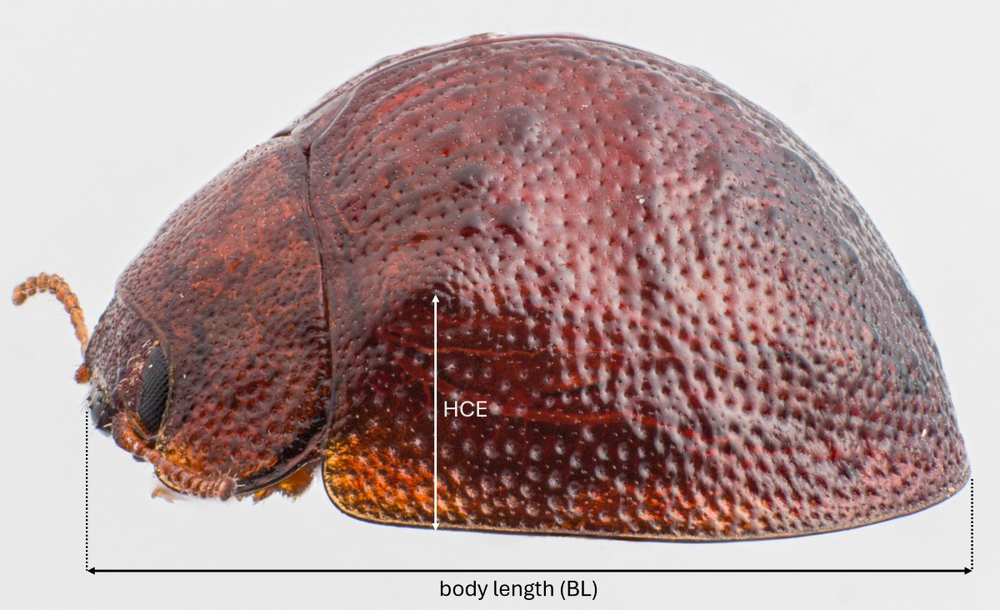

TrachymelaID
TrachymelaID
TrachymelaID
TrachymelaID
Trachymela includes a large number of species, yet most species tend to look very similar at first glance. They tend to be a shade of brown, from medium brown to almost black and their elytra are generally studded with wart-like elevations (verrucae) that are usually darker than the rest of the surface. Besides having few useful characters such as colour patterns that help in immediate identification, those morphological characters that could be diagnostic (such as patterns of black markings) tend to be quite variable within species. Thus, it is rarely possible to identify a specimen of Trachymela to species by external morphology alone.
This is particularly true of most dead specimens, where the cuticular wax may be fully or partially absent. Specimens preserved in alcohol in particular will be missing all of their cuticular wax. Due to these factors, the key makes considerable use of morphological measurements. If a male is available for identification, the aedeagus can provide critical information to discriminate between very similar species.
There are a few characters that have in practice been found to yield the best results with this key. Often, just a few measurements can result in quickly ending up with just one or two species to consider. To take some of these measurements, a microscope with a graticule is almost essential (though some length measurements can be made with vernier calipers). Many Trachymela species are restricted to a small number of closely related hosts, so if the host species is known, this can be a big help. The geographic locality where the specimen was found will also reduce the number of potential species to consider.
The following will be of major help in determining a species, and are each discussed in more detail below:
For a more in-depth look at the characters used in this key pertaining to individual body parts or features, please refer to the following sections:
Though very useful in reducing the number of candidate species for consideration, the locality where the specimen was found should be used with care. The coded known distribution of a species may not include all the locations where a species may actually occur, due to limited sampling. The same is true when specifying the host tree that it was found on.
Determining the sex of a specimen is relatively straightforward using the structure of the first tarsomere on the fore and mid legs. In males (Fig. 1a), there are two types of setae, with simple pointed setae on the fringe of the pad and a dense oval patch of spatulate setae at the middle. In the female (and the male hind legs) (Fig. 1b), the setae are entirely simple and divided along the midline by a glabrous line. Note that carded specimens will need to be removed to examine this. If the legs have not been properly set in pinned specimens, it can sometimes be difficult to see this, particularly in very small specimens, or if the legs are bunched up with tarsal pads pointing inwards.


The length of a specimen can be measured with either vernier calipers or a microscope equipped with a graticule. One of the things to watch for, particularly in carded specimens, is that the pronotum may have been pushed forward when the specimen was prepared, resulting in a gap between the mesoventrite and the prosternal process, resulting in overestimating the length by up to 5%. It is easily corrected by measuring the gap between prosternum and mesoventrite and subtracting it from the total length measurement.
Measurements in original descriptions by early authors are often given in “lines”, a unit commonly used in nineteenth-century entomology (1 line = 1/12 inch ≈ 2.12 mm; Torre-Bueno 1985). However, in some of his work, Blackburn may have used used "lines" to mean 2.25 mm. I have been able measure some type specimens and for those cases where Blackburn gives a single length (rather than a range) have compared these measurements with his stated lengths. It turns out that 1 line = 2.11 mm best fits his values, and I have therefore used the standard ratio of 1 line = 1/12 inch when converting his lengths to mm.
Individuals of Trachymela range from entirely black to entirely brown, or exhibit a brown ground colour with varying degrees of black, paler-brown, or darker-brown patterning. These contrasting markings typically correspond to morphological structures such as the verrucae or the humeral callus. In this guide, "colour" refers specifically to the distribution, extent, relative positioning and intensity of these contrasting markings.
Caution is advised when evaluating colour characteristics. Teneral individuals are frequently much paler than fully sclerotised adults, and darker pigmented areas may be incomplete or absent. Conversely, some teneral specimens exhibit exaggerated contrast between the pale ground colour and darker structures (such as verrucae) - a distinctness that diminishes substantially as the entire cuticle darkens with maturity.
The two main aspects of pronotum shape that can be useful in the determination of species is the ratio of width/length (PW/PL), and the position, in relation to the length, of its widest point. Blackburn used these two characters quite extensively in his keys. The PW/PL measure varies from just under 2 up to about 3 for the genus in general, but is restricted within a much narrower range for each species.
The second measure relates to the curvature of the pronotal lateral margins, and measures the point along the margins where the pronotum is widest.
This measurement is most easily performed with a graticule-equipped microscope, but on larger specimens could be done with a vernier caliper. The measurement is from the highest point of the humeral callus to the closest point on the elytral margin. If a microscope with a graticule is not available, the insect can be photographed from a lateral viewpoint (as in Figure 2) and its length on the image (BL) and distance from peak of humeral callus to the elytral edge (HCE) can be measured conveniently, thus obtaining the ratio HCE/BL. In the key, this ratio is given as a percentage (100*HCE/BL), with values ranging from about 12 to 32.

The shape and structure of the aedeagus have several aspects that are used in the key and are helpful in placing the species within a group. In addition, its length (Fig. 3) as a proportion of the insect’s length (LPE/BL) provides a valuable additional character to help in determining the identity of a specimen.

Several other measurements are used in the key and can be useful additional aids in determining a specimen but tend to be both more difficult to measure and provide less additional information.
Most of the earlier authors working on this genus, such as Chapuis and Blackburn, wrote their species descriptions in Latin. For the pages that discuss the described species, the original descriptions have been provided (as an image), along with a translation into English. ChatGPT was used to do the translation, and it was noticed that ChatGPT had introduced some errors into the translations. For example, it consistently translated a phrase such as